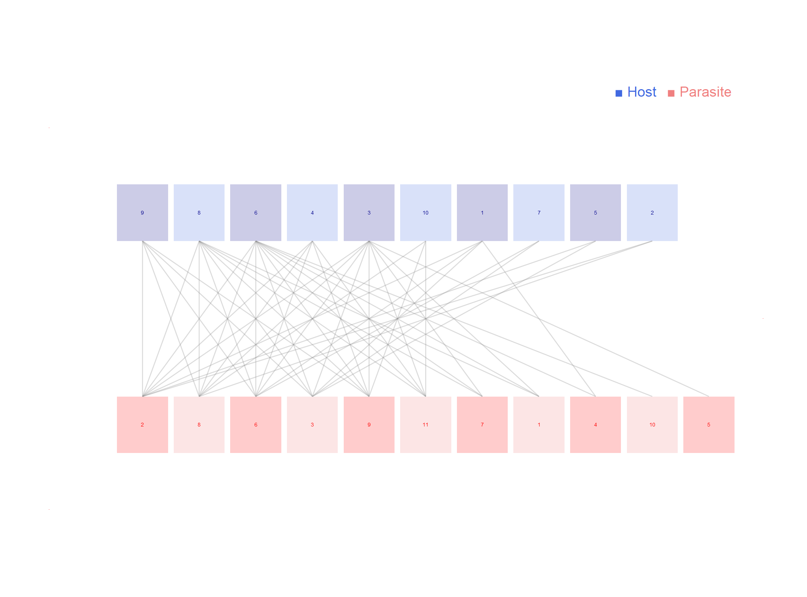

Network: RA_HP_041

Host 1 Amalaraeus.penicilliger, 2 Amphalius.runatus, 3 Amphipsylla.sibirica, 4 Catallagia.dacenkoi, 5 Catallagia.ioffi, 6 Corrodopsylla.birulai, 7 Megabothris.calcarifer, 8 Megabothris.rectangulatus, 9 Peromyscopsylla.bidentata, 10Rhadinopsylla.integella
Parasite
1 Arvicola terrestris, 2 Clethrionomys rufocanus, 3 Clethrionomys rutilus, 4 Lemmus sibiricus, 5 Microtus middendorffi, 6 Microtus oeconomus, 7 Neomys fodiens, 8 Sorex arcticus, 9 Sorex caecutiens, 10 Sorex minutus, 11Sorex roboratus
Hadfield JD, Krasnov BR, Poulin R, Shinichi N (2013) A tale of two phylogenies: comparative analyses of ecological interactions. The American Naturalist 183(2): 174-187 Taimyr